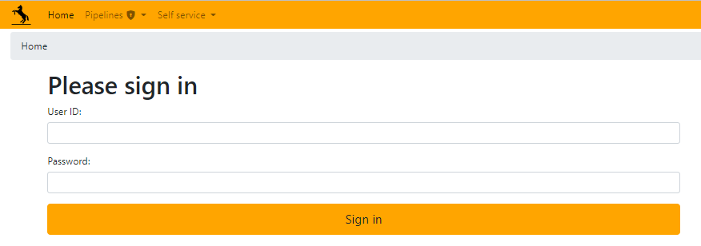
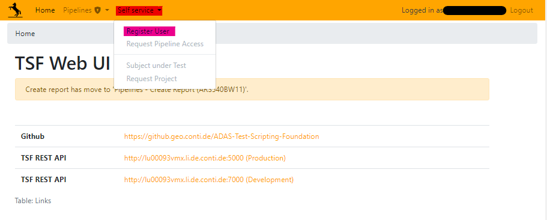
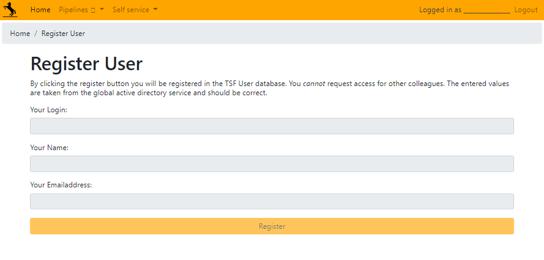
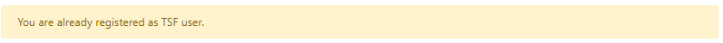

TSF User registration#
In order to be able to generate reports and testruns in the oracle, database one has to be registered in the TSF Users table. This would allow for not only generating reports but also labeling assessments using Matchbox or other labeling tools. Please follow the following steps for successful registration in the TSF database:
Navigate to this link: https://tsf-webui.conti.de/login/
Sign in with your windows credentials and you would be directed to the TSF Web UI landing page.
Once signed in, click on the “Self Service” and select “Register User” from the drop-down in the top left corner of the home page.
Verify your details such as [Login, Name, and Email address] (these details are auto-filled from the global active directory service) and click on “Register”.
Note
You cannot request access for other colleagues.
Hint
If you are already registered in the TSF DB you shall see the following message.
